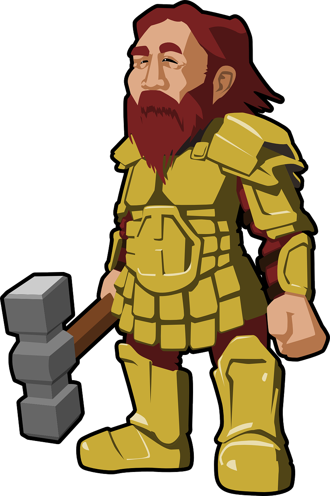

Odin Recipes

Recipes
A small collection of recipes for some of the items crafted by the dwarfs in Norse Mythology.
Gleipnir - Fenrir's Bindings
Gullinbursti - The Golden Maned Boar
Sif's Hair - Golden Wig